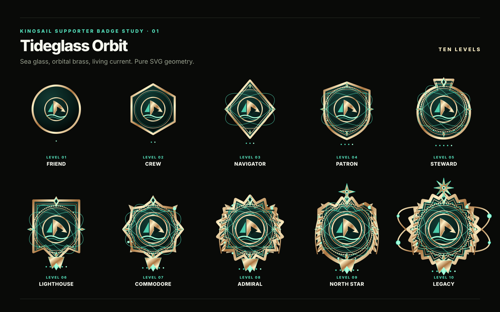
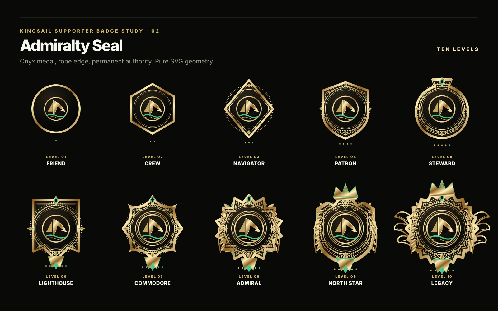
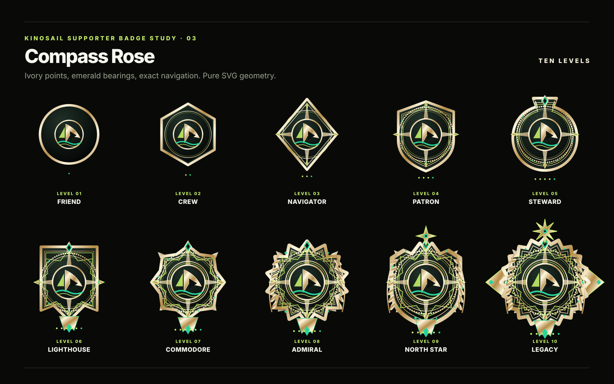
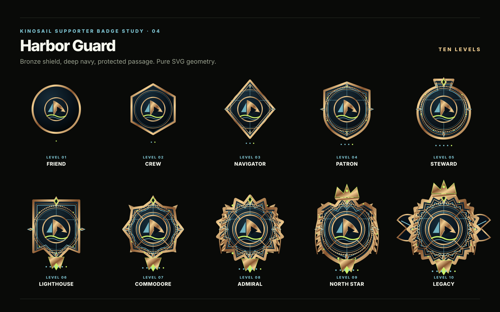
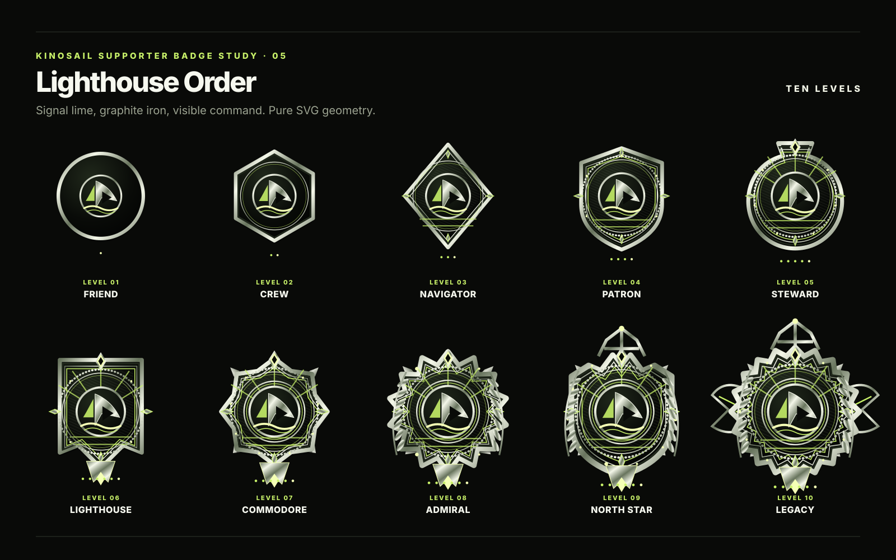
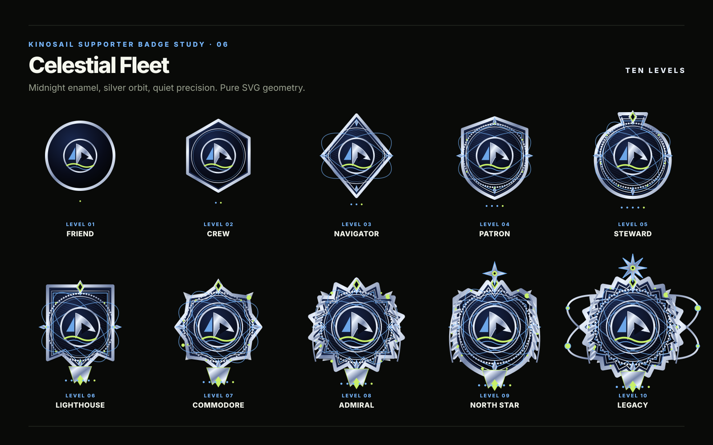
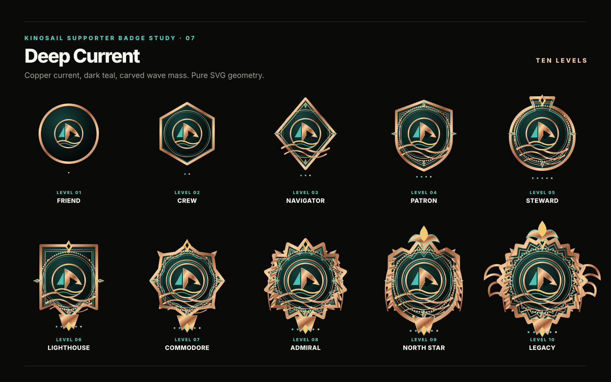
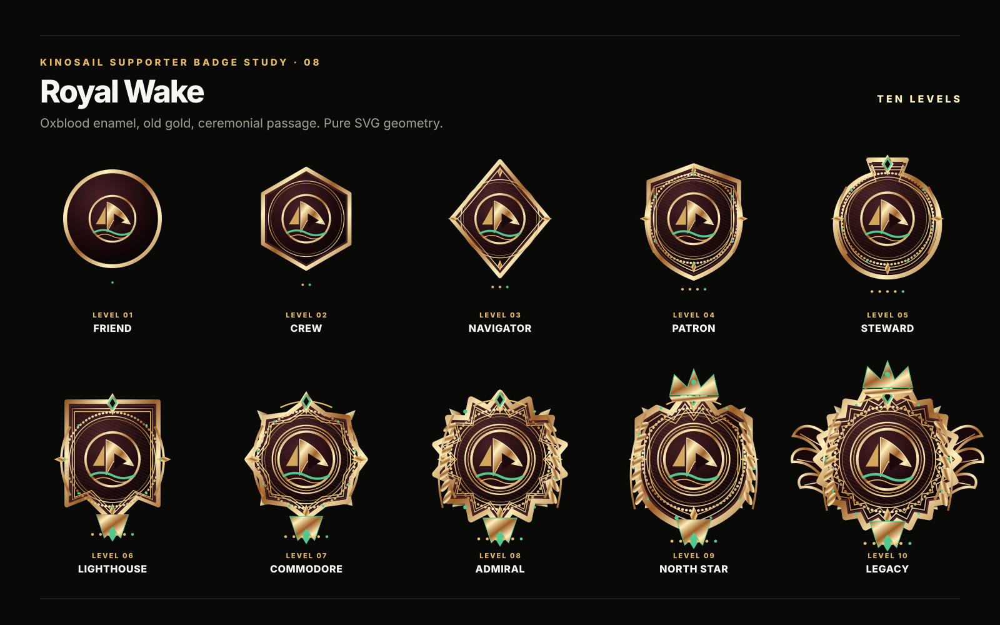
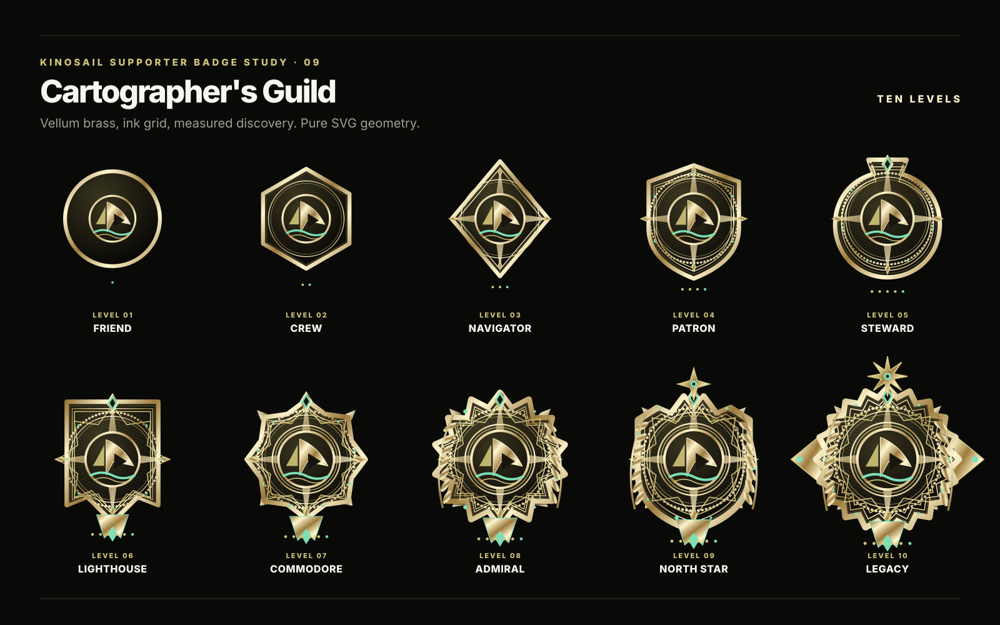
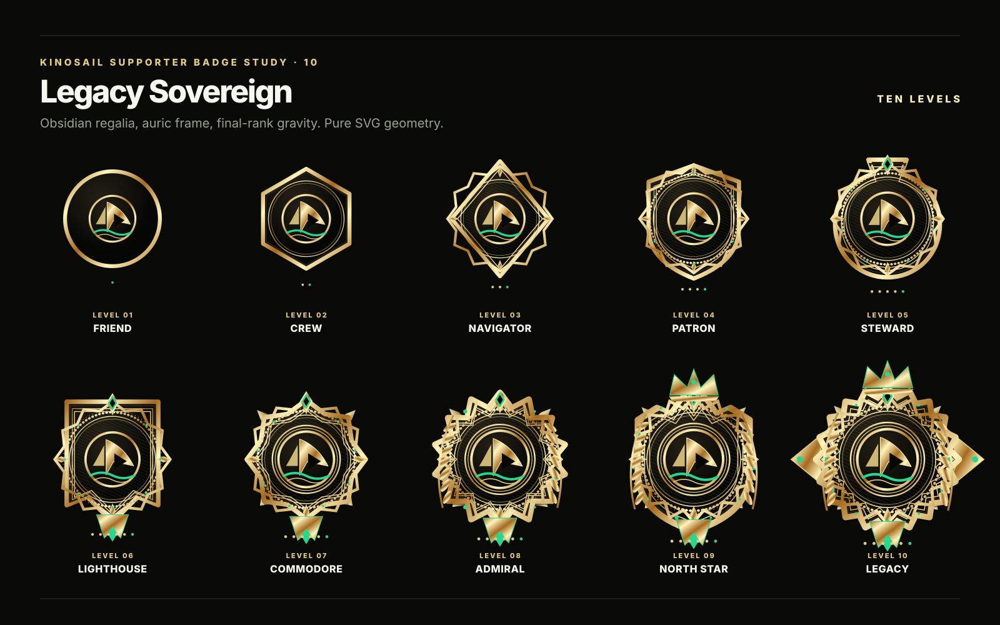

Tideglass Orbit
Fluid and alive. Best fit for recurring support.

Every direction keeps the Kinosail sail at its center. Metal weight, detail, and ceremony increase with rank.
Fluid and alive. Best fit for recurring support.

Permanent and formal. Closest to a minted naval medal.

Exact and navigational. Strong rank recognition at small sizes.

Protective and trustworthy. A shield without military excess.

Direct and technical. Beacon geometry belongs to Kinosail.

Quiet at first, expansive at the final level.

Carved copper and moving water. Less ceremonial, more cinematic.

Warm enamel and old gold. Ceremony arrives late.

Measured discovery through map grids and bearing points.

Maximum regalia, reserved for the strongest status system.
